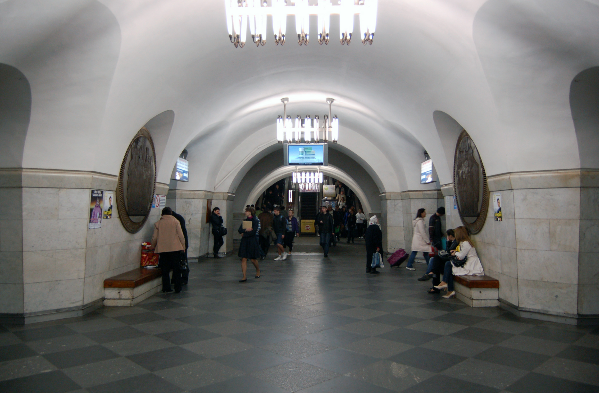

About
ENG 🇬🇧 -> JPN 🇯🇵 -> UKR 🇺🇦
[ENG]
“Vokzalna is a station of the Kyiv subway system. It is located on the Sviatoshynsko-Brovarska line between the Polytechnic Institute and University stations. It was opened on November 6, 1960 as part of the first stage of construction. It is one of the busiest stations in the Kyiv metro.
Since 1986, the station has had the status of an “architectural monument of local importance”, with a security number 192.
The station has three underground halls - a middle hall and two halls with boarding platforms. The halls of the station are interconnected by a series of passageways-portals that alternate with pylons. The underground hall is connected to the above-ground lobby by a three-belt single-flight escalator.
The station is a symbol of the city's railway gate. The architects' idea was that the station should introduce some aspects of the history of Ukraine to the city's guests. The large bronze medallions (by O. Myzin) in the pylons of the central hall contribute to this. The cladding of the white marble pylons is rather complicated due to the fact that they expand to the top. The top of the pylons is fixed with a massive molded marble cornice, which indicates the cost of the cladding.
The ground lobby (architects A. Dobrovolsky and I. Maslenkov) has a two-story building adjacent to the suburban station building of the Kyiv-Pasazhyrskyi station. The Starovokzalna light rail station is also located nearby.
The station serves, in addition to the railway station, the Transsignal plant, the Ukraina department store, the circus, and a number of design institutes.
[JPN]
「ヴォクザルナはキエフ地下鉄の駅である。スヴィアトシンスコ-ブロヴァルスカ線の工科大学駅と大学駅の間にある。1960年11月6日、第一期工事の一部として開業した。キエフの地下鉄で最も混雑する駅のひとつである。
1986年以来、この駅は地域の重要建築物に指定されている。
駅には3つの地下ホールがあり、中央ホールと2つのホールに乗り場がある。駅の各ホールは、鉄塔と交互に配置された一連の通路と連絡通路で結ばれている。地下ホールと地上ロビーは、3本のベルトで結ばれた単便エスカレーターで結ばれている。
この駅は、この街の鉄道の玄関口のシンボルである。ウクライナの歴史の一端を紹介する駅にしようというのが建築家のアイデアだった。中央ホールのパイロンにある大きなブロンズ・メダル（O.マイジン作）は、これに貢献している。白い大理石の鉄塔の向きは、上部に向かって広がっているため、かなり複雑である。パイロンの上部は、巨大な型押し大理石のコーニスで固定されており、この被覆の貴重さを示している。
地上ロビー（建築家A.V.ドブロヴォルスキーとI.L.マスレンコフ）には、キエフ・パサジルスキー駅の郊外駅舎に隣接する2階建ての建物がある。近くにはスタロヴォクザルナ駅もある。
この駅には鉄道駅のほか、トランスシグナル工場、ウクライナ百貨店、サーカス、多くのデザイン研究所がある。
[UKR]
«Вокза́льна» — станція Київського метрополітену. Розташована на Святошинсько-Броварській лінії між станціями «Політехнічний інститут» і «Університет». Відкрита 6 листопада 1960 року у складі першої черги будівництва. Є однією з найбільш завантажених станцій київського метро.
З 1986 року станція має статус «пам'ятка архітектури місцевого значення», охоронний номер 192.
Станція має три підземних зали — середній і два зали з посадковими платформами. Зали станції сполучені між собою рядами проходів-порталів, які чередуються з пілонами. Підземний зал з'єднаний із наземним вестибюлем тристрічковим одномаршевим ескалатором.
Станція — символ залізничних воріт міста. Задум архітекторів полягав у тому, що станція мала б знайомити гостей міста з деякими аспектами історії України. Великі медальйони з бронзового литва (художник О. Мизін) у пілонах центрального залу сприяють цьому. Облицювання пілонів з білого мармуру доволі складне з огляду на те, що вони до верху розширюються. Верх пілонів закріплений масивним карнизом з лекального мармуру, що свідчить про коштовність облицювання.
Наземний вестибюль (архітектори А. В. Добровольський, І. Л. Масленков) має двоповерхову будівлю, яка примикає до будинку приміського вокзалу станції Київ-Пасажирський. Поблизу також знаходиться станція швидкісного трамвая «Старовокзальна»
Станція обслуговує, крім залізничного вокзалу, завод «Транссигнал», універмаг «Україна», цирк, низку проєктних інститутів.
